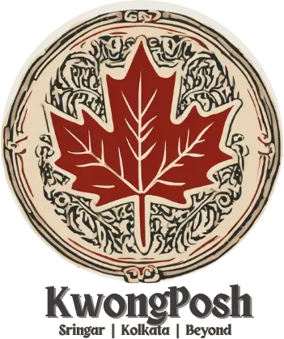

Kashmir, by hand.
One-of-one crafts, each signed by its maker and traced to where it was made.
Request accessMade once. Signed by the hand that made it. Never repeated.
The crafts
Four to beginKani Pashmina
Woven with wooden tojis, one weft colour at a time.
KanihamaSozni
Needlework so fine it is mistaken for weaving.
SrinagarWalnut
Deep relief carved in seasoned Kashmiri walnut.
AnantnagPapier-mâché
Burnished with river stone, painted by hand.
SrinagarPhotography arrives with the founding collection.
Ask any piece where it came from.
Signed
The insignia of the artisan who made it.
Traced
A geo-tagged record of every hand it passed through.
Open price
What the maker, materials and house each receive.
Kept
A buyback if you ever let it go.
An idea from a classroom at Ashoka University. 2023.
KwongPosh began in an entrepreneurship class, with one question: what if the arts and crafts of Kashmir were rebuilt from the hand up? Fair to the maker, honest about where every piece comes from.
Be first to see the collection.
Early access while the first pieces are few. We write only when there is something worth seeing.